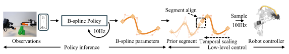
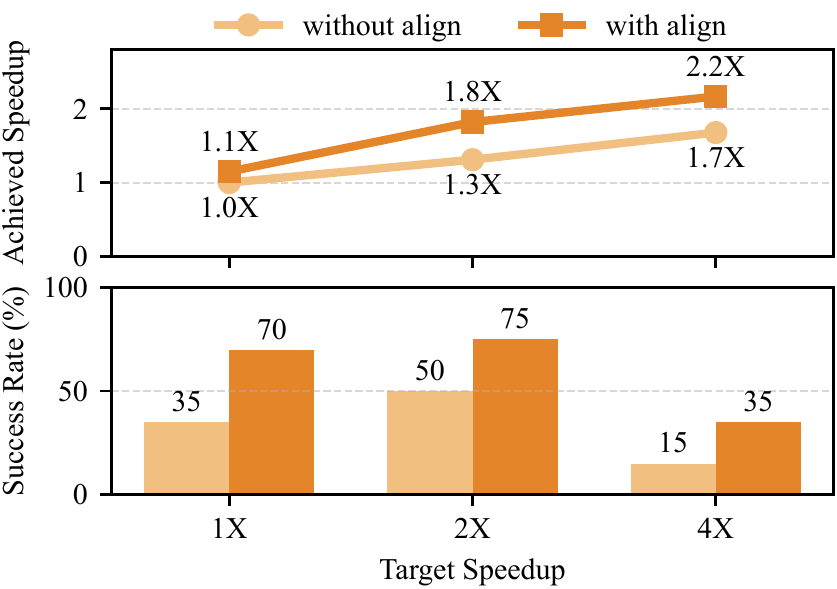

Push-T
| DP | Reg. | |
|---|---|---|
| Base | 72% | 63% |
| +BSP | 75% | 66% |
TL;DR: Replace discrete action chunks with B-spline curves, for faster visuomotor policy.
Real-time raw videos.
Abstract: In this work, we present B-spline Policy (BSP), an action representation designed for accelerating robot manipulation policies. Instead of predicting fixed-rate action chunks, BSP parameterizes actions as continuous B-spline curves defined by a set of knots and control points. This representation yields smooth, time-continuous trajectories that can be temporally scaled and executed by low-level controllers at higher frequencies and speeds. We show that B-spline–parameterized actions can be seamlessly integrated into standard policy learning pipelines by directly predicting B-spline parameters. Experiments on simulated and real-world tasks demonstrate that BSP significantly reduces task completion time, achieving substantial improvements over baseline methods while maintaining strong success rates.
Speed remains a bottleneck in visuomotor policies. A key reason is action chunking: policies predict fixed-rate waypoints, treating every moment the same. Manipulation is not uniform: robots should move fast in free space and slow down near contact making. Simply speeding up these waypoints can make motion jerky, and hard to track.
To address these issues, we propose B-spline Policy. Instead of predicting fixed-rate waypoint chunks, it represents action trajectories as continuous B-spline curves. At execution time, the continuous curves can be sampled at any desired control frequency and temporally rescaled to traverse the same trajectory in less time, enabling faster and smoother motion.
A B-spline defines a smooth curve by a set of knots and control points.
Instead of drawing straight lines between waypoints, a B-spline creates a smooth path that follows their overall trend. Think of it like bending a flexible ruler near waypoints instead of connecting them with sharp corners.
The animation shows the iterative fitting of a B-spline to approximate a trajectory. Given a set of discrete waypoints from a trajectory, it starts with only the two boundary knots and a coarse least-squares B-spline. It measures the reconstruction error against the target trajectory, drops a new knot where the error is worst, and refits. The loop repeats until the largest error falls at or below the selected threshold, then it starts over.
How do you learn a B-spline policy? Rather than predicting a set of fixed-rate waypoints, B-spline Policy parameterizes the action space as a continuous B-spline trajectory.
Training. Each demonstration is first converted into a B-spline (see Fitting a B-spline). Exploiting the local support of B-splines, the policy predicts the next B-spline segment — both the control points and the knot values as one fixed-size vector; serving as a drop-in replacement for action-chunk policies such as Diffusion Policy and ACT.

Inference and Execution. At each inference step, the policy takes images and proprioception as the input and outputs future B-spline segment parameters. At the low-level control stage, we align each successive B-spline segment with the prior one. The predicted B-spline segment can be temporally scaled to adjust execution speed. Importantly, because B-splines are differentiable, the controller can obtain desired position, velocity, and acceleration directly from the B-spline curve and its derivatives, enabling velocity-aware control or PD control with feedforward terms before sending commands to the robot.
We integrate B-spline Policy into two imitation-learning backbones, Diffusion Policy and ACT; and evaluate it on three real-world tasks.
| Task | Metric | Diffusion Policy | Regression Policy | DemoSpeedUp Comparison | ||||||||||||
|---|---|---|---|---|---|---|---|---|---|---|---|---|---|---|---|---|
| 1X | 2X | 4X | 1X | 2X | 4X | DemoSpeedUp | Diff. + BSP 4X | Reg. + BSP 4X | ||||||||
| Diff. | Diff. + BSP | Diff. | Diff. + BSP | Diff. | Diff. + BSP | Reg. | Reg. + BSP | Reg. | Reg. + BSP | Reg. | Reg. + BSP | |||||
| Cube Picking | Success rateAvg. time | 19/206.48s | 20/206.31s | 20/204.58s | 20/203.43s | 20/203.52s | 20/202.45s | 18/209.84s | 19/207.92s | 15/205.55s | 19/203.36s | 19/203.74s | 19/202.08s | 18/206.66s | 20/202.45s | 19/202.08s |
| Table Cleaning | Success rateAvg. time | 11/2041.40s | 15/2036.97s | 15/2028.87s | 14/2020.81s | 12/2023.31s | 11/2018.05s | 13/2049.70s | 18/2038.47s | 13/2034.48s | 18/2019.11s | 13/2023.57s | 14/2011.80s | 3/2049.47s | 11/2018.05s | 14/2011.80s |
| Speed Stacking | Success rateAvg. time | 14/2020.47s | 14/2018.13s | 15/2013.66s | 15/2011.45s | 9/2010.49s | 7/209.62s | 8/2019.75s | 16/2017.61s | 4/2013.49s | 13/2010.98s | 8/2010.42s | 0/20NA | 3/2018.57s | 7/209.62s | 0/20NA |
Segment alignment is critical. Inference-time segment alignment keeps consecutive spline segments continuous, which is critical for stable high-speed execution. Without it, success becomes highly sensitive to speed as discontinuities push the policy out of distribution.

We also evaluate BSP on Push-T, RoboMimic, and RoboCasa simulation tasks.
| DP | Reg. | |
|---|---|---|
| Base | 72% | 63% |
| +BSP | 75% | 66% |
| DP | Reg. | |
|---|---|---|
| Base | 100% | 99% |
| +BSP | 100% | 91% |
| DP | Reg. | |
|---|---|---|
| Base | 79% | 84% |
| +BSP | 85% | 94% |
| DP | Reg. | |
|---|---|---|
| Base | 93% | 89% |
| +BSP | 94% | 93% |
| DP | Reg. | |
|---|---|---|
| Base | 77% | 93% |
| +BSP | 89% | 97% |
| DP | Reg. | |
|---|---|---|
| Base | 27% | 40% |
| +BSP | 46% | 60% |
We find that BSP generally matches or improves baseline success rates across these simulation benchmarks.
Acknowledgements are omitted for anonymous review.